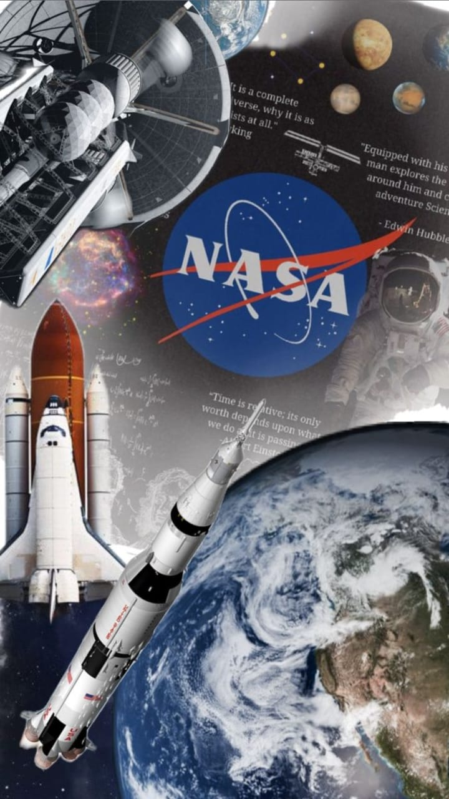

The National Aeronautics and Space Administration (NASA) is the space agency of the United States of America, established in 1958. Its headquarters are in Washington, D.C. NASA was created to lead America’s efforts in space exploration, scientific research, and aeronautics.

NASA is best known for its historic Apollo missions, especially Apollo 11, which successfully landed the first humans on the Moon in 1969. Since then, NASA has conducted numerous missions to explore Mars, Jupiter, Saturn, and beyond. Its Mars rovers like Curiosity and Perseverance have provided valuable information about the Red Planet.
NASA plays a major role in operating the International Space Station (ISS) and conducts experiments in microgravity, biology, medicine, and physics. It has also contributed to Earth science by studying climate change, oceans, and atmospheric systems.
Some of NASA’s recent and future missions include the James Webb Space Telescope, Artemis programme (aiming to return humans to the Moon), and plans for human missions to Mars.
NASA represents technological excellence, innovation, and leadership in space science and continues to expand humanity’s understanding of the universe.